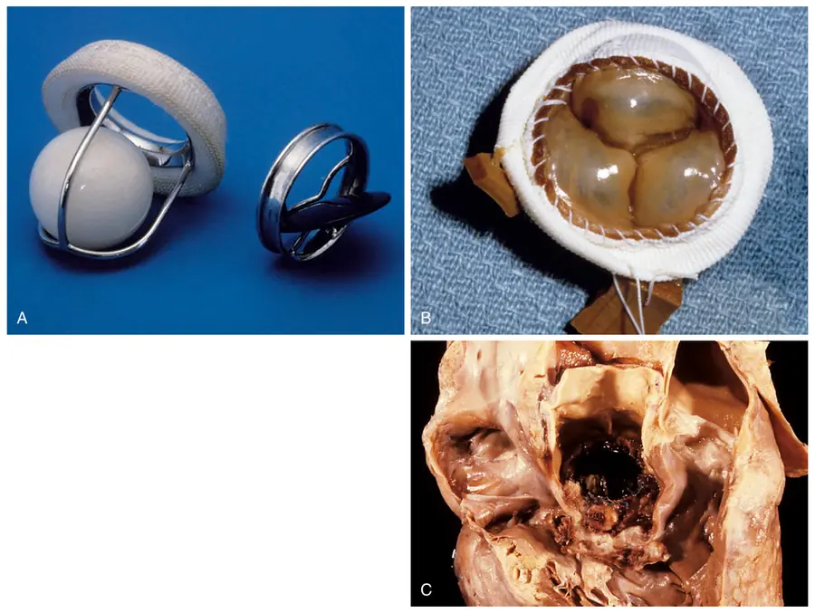

نسخه استخراجشده؛ ترجمه یا تأیید علمی انجام نشده است. وضعیت: captured
خانم ۴۴ سالهای پرولاپس دریچهی میترال (MVP) با سوفل دارد. میگوید: «ده سال است قبل از هر جرمگیری آنتیبیوتیک میخورم.» امروز هم برای جرمگیری آمده. باز هم لازم است؟
بسیاری از کارهای دندانپزشکی باکتریمی میدهند، ولی کارهای روزمره هم همین کار را میکنند:
بیمار هر روز چند بار مسواک میزند و غذا میجود، ولی سالی یکی دو بار پیش دندانپزشک میآید. پس جمع باکتریمی روزانه در یک سال خیلی بیشتر از یک جلسهی درمان است. تعداد باکتری در خون پس از درمان دندانپزشکی هم کم است و به باکتریمی روزانه شبیه است.
هیچ کارآزمایی تصادفیای ثابت نکرده که پروفیلاکسی جلوی IE را میگیرد. بیشتر موارد IE با منشأ دهانی از همین باکتریمیهای روزانه است و پروفیلاکسی، حتی اگر صددرصد مؤثر باشد، فقط تعداد بسیار کمی را پیشگیری میکند.
نتیجهی بالینی: باکتریمی پس از مسواک در بیمارِ با بهداشت بد و لثهی خونریزیدهنده بیشتر است. بهداشت دهان خوب و درمان منظم دندانپزشکی، مؤثرترین پیشگیری است.
از ۲۰۰۷ و در بازنگری AHA 2021، معیار «بیشترین خطر پیامد بد» اندوکاردیت است، نه بیشترین خطر ابتلا در طول عمر. پروفیلاکسی فقط برای این چهار گروه است:

چرا ۶ ماه؟ در این مدت روی مادهی مصنوعی اندوتلیوم کشیده میشود.
پروفیلاکسی لازم نیست: MVP با یا بی سوفل، بیماری روماتیسمی قلب، دریچهی دولتی آئورت، تنگی کلسیفیهی آئورت، نقص دیوارهی دهلیزی یا بطنی (ASD، VSD)، کاردیومیوپاتی هیپرتروفیک، پیسمیکر، ICD و بایپس عروق کرونر (CABG). اگر پزشک یا خود بیمار باز هم پروفیلاکسی خواست، تصمیم با دندانپزشک و بیمار است: خطر و فایده را توضیح بده و در پرونده بنویس.